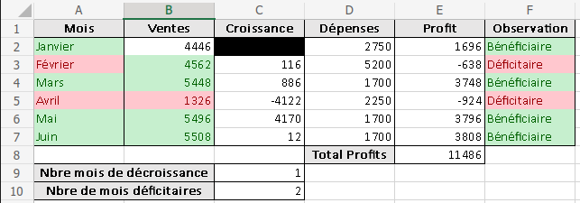
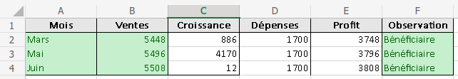
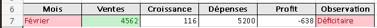
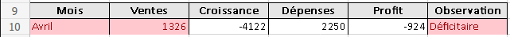

Calculer le Nbre mois de décroissance des ventes, c-à-d le nombre de mois où la
croissance est négative.
Calculer le Nbre de mois déficitaires.
Utiliser la mise en forme conditionnelle (MFC) pour :
Colorier en vert les Mois ayant un profit
positif ou nul, et en rouge les Mois ayant un
profit négatif.
Colorier en vert les Observationbénéficiaires, et en rouge les Observationdéficitaires.
Colorier en vert les Ventes ayant une
Croissancestrictement positive, et en rouge
les Ventes ayant une Croissancestrictement négative.

Résultats de la mise en forme conditionnelle
En utilisant un Filtre automatique :
Trouver les mois dont les Ventes sont supérieures ou égales à 5000, copier le
résultat dans une nouvelle feuille nommée Filtres.

Résultats attendus
Trouver les mois dont l'Observation est Déficitaire malgré une
Croissancepositive des ventes, copier le résultat dans la feuille
Filtres.

Résultats attendus
Trouver les mois dont le Profit est négatif et la Croissance
est négative, copier le résultat dans la feuille Filtres.

Résultats attendus